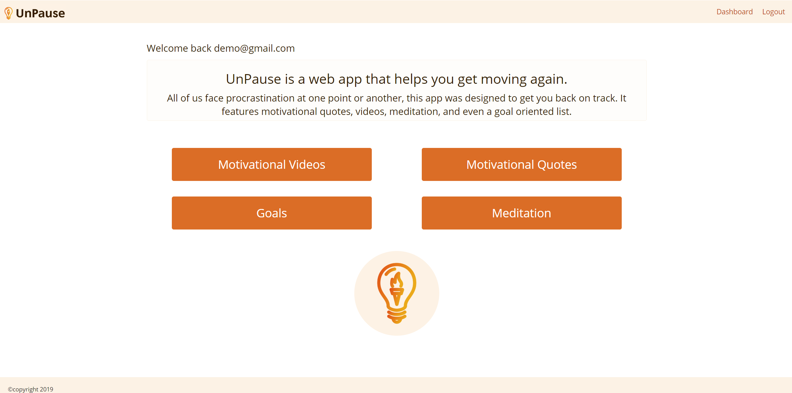
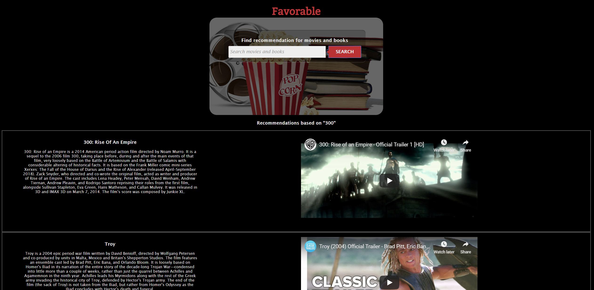

I enjoy playing with the following technologies:
- HTML
- CSS
- JavaScript
- React
- Node.js
- Git/GitHub
- REST APIs
- JWT
- MongoDB
- TravisCI
My Projects

UnPause is a web app that helps you get moving again. All of us face procrastination at one point or another, this app was designed to get you back on track. It features motivational quotes, videos, meditaion, and even a goal oriented list.

FitLog is a web app that allows you to create a workout routine. After the routine is created, feel free to edit/delete routine once your workout needs change. This app is designed to keep you on track with your fitness goals. Stay healthy!

This app is designed to provide recommendations on movies, music, and books. The recommendations are based upon a user’s input of music, movies, and books.